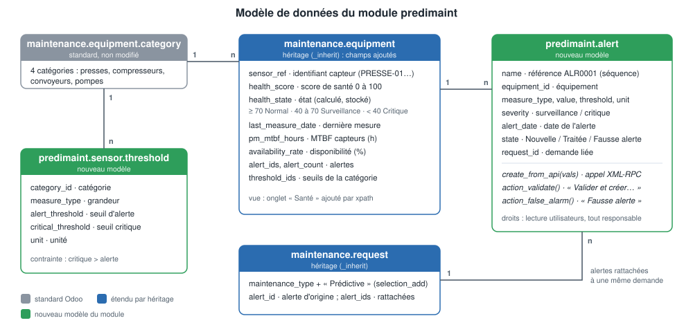
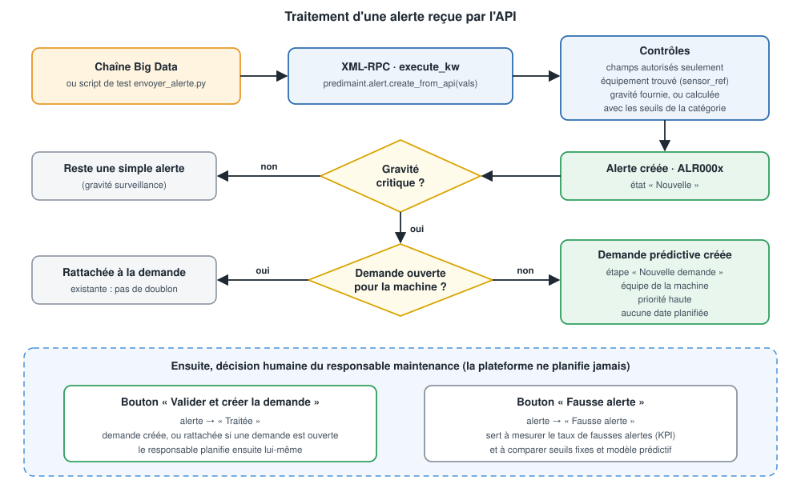

Étude et optimisation de la gestion de la maintenance industrielle dans l'ERP Odoo par l'intégration de fonctionnalités prédictives
predimaint est développé, testé et installé. Il ajoute à
l'application Maintenance un score de santé par équipement, des seuils capteurs par catégorie et des alertes
reçues par l'API XML-RPC. Une alerte critique crée automatiquement une demande d'intervention
prédictive, affectée à la bonne équipe et sans doublon ; le responsable maintenance garde la décision.
17 tests unitaires passent, l'installation sur base vierge ne produit aucun avertissement, et le scénario a
été joué de bout en bout. Prochaines étapes : kanban coloré, rapport QWeb, escalade automatique, groupes de
sécurité et pièces détachées.
| Critère (cahier des charges, § 11.1 et § 6) | État | Détail |
|---|---|---|
Module predimaint installable sur base vierge | Fait | Version 17.0.1.0.0, dépend de maintenance et stock ; 0 avertissement. |
| Modèles (2 extensions, 2 nouveaux) | Fait | Équipement, demande, seuils, alertes ; champs calculés et contraintes. |
| Fiche équipement : score, état, seuils | Fait | Onglet « Santé » ajouté par héritage de vue, bouton « Alertes ». |
| Alerte API → demande prédictive, bonne équipe, sans doublon | Fait | Méthode create_from_api ; vérifié par les tests et par une démonstration réelle. |
| Validation humaine (boutons) | Fait | « Valider et créer la demande », « Fausse alerte ». |
| Tests unitaires | Fait | 17 tests TransactionCase, 0 échec. |
| Données de base réalistes | Partiel | 20 équipements, 2 équipes, 4 catégories, 19 seuils ; pièces détachées et Achats à faire. |
| Droits et sécurité (§ 5.4, 6.5) | Partiel | Droits utilisateur / responsable ; groupes métier, règles par équipe et tests non-admin à faire. |
| Analyse du processus (note de cadrage) | Partiel | AS-IS, TO-BE, acteurs et KPI décrits dans le cahier des charges ; note de cadrage à rédiger. |
| Kanban des équipements coloré par état | À faire | L'état est déjà stocké, donc utilisable pour la couleur. |
| Rapport QWeb « Fiche santé équipement » | À faire | Dossier reports/ préparé. |
Escalade (ir.cron) et notification Discuss | À faire | Relance si une alerte critique n'est pas traitée sous 2 h. |
| Import CSV de l'historique | À faire | Historique de pannes disponible (jeu public préparé côté Big Data). |
| Consommation de pièces et réapprovisionnement | À faire | Nécessite les pièces détachées et le module Achats. |
| Situation actuelle (AS-IS) | Situation cible (TO-BE) |
|---|---|
| La panne est découverte quand la machine s'arrête. | Les capteurs détectent la dérive avant la panne. |
| L'opérateur prévient par téléphone ; le responsable note sur papier ou dans un tableur. | L'alerte crée automatiquement une demande d'intervention dans Odoo, avec la machine et la mesure en cause. |
| Aucun historique par machine, donc pas de MTBF, MTTR ni disponibilité. | Score de santé, MTBF et disponibilité suivis par équipement dans Odoo. |
| Préventif inexistant ou fixe (calendrier). | Maintenance prédictive, selon l'état réel de la machine ; décision gardée par le responsable. |
Le standard Odoo couvre l'essentiel (équipements, équipes, demandes, étapes). Le développement est justifié par trois besoins qui le dépassent : des seuils et un score de santé propres à chaque machine, la réception de données d'une source externe (la chaîne Big Data), et une règle d'escalade des alertes.

Les modèles standard ne sont jamais modifiés : les champs sont ajoutés par _inherit. L'état de
santé est calculé (@api.depends) et stocké, pour pouvoir filtrer et regrouper les équipements. La
contrainte @api.constrains interdit un seuil critique inférieur ou égal au seuil d'alerte. Le type
« Prédictive » est ajouté aux demandes par selection_add, avec ondelete='set default' :
si le module est désinstallé, ces demandes redeviennent correctives au lieu de bloquer.

create_from_api, puis décision du responsable maintenance.| Élément | Réalisation |
|---|---|
| Fiche équipement | Onglet « Santé » (score en barre de progression, état coloré, indicateurs, seuils de la catégorie, dernières alertes) et bouton « Alertes », ajoutés par inherit_id et xpath sur maintenance.hr_equipment_view_form. |
| Liste des équipements | Identifiant capteur, score et état coloré, par héritage de maintenance.hr_equipment_view_tree. |
| Alertes | Liste colorée par gravité, formulaire avec barre d'état et boutons, recherche avec filtres et regroupements. |
| Seuils | Liste éditable directement en ligne, regroupée par catégorie. |
| Demandes | Alerte d'origine et alertes rattachées affichées dans le formulaire. |
| Menu | Maintenance › PrediMaint › Alertes, Seuils capteurs. |
Droits (ir.model.access.csv) | Lecture pour les utilisateurs internes ; tous les droits pour le groupe maintenance.group_equipment_manager (seul le responsable décide). |
Chargées par un fichier XML en noupdate, pour qu'une mise à jour du module n'écrase pas les
modifications faites dans Odoo ni les scores envoyés par la chaîne Big Data.
| Catégorie | Équipements | Équipe | Exemples de seuils (alerte / critique) |
|---|---|---|---|
| Presses | PRESSE-01 à 05 | Mécanique | Température 60 / 75 °C · pression 180 / 200 bar |
| Compresseurs | COMP-01 à 05 | Mécanique | Température 90 / 105 °C · pression 8,5 / 10 bar |
| Convoyeurs | CONV-01 à 05 | Électrique | Vibration 2,8 / 4,5 mm/s · puissance 7,5 / 9,5 kW |
| Pompes | POMPE-01 à 05 | Électrique | Température 65 / 80 °C · pression 6 / 7,5 bar |
Les identifiants capteurs (PRESSE-01…) sont les mêmes que ceux du simulateur du mini-projet Big Data.
Les scores initiaux sont variés : 16 équipements à l'état Normal, 3 en Surveillance et 1 en Critique.
| Thème des tests | Nb | Ce qui est vérifié |
|---|---|---|
| État de santé | 3 | Bornes 70 et 40 comprises ; état stocké et filtrable ; score refusé hors de 0 à 100. |
| Seuils | 2 | Seuil critique ≤ seuil d'alerte refusé ; gravité calculée correctement. |
| API et déduplication | 9 | Référence ALR0001 ; alerte de surveillance sans demande ; alerte critique → demande prédictive (étape, équipe, sans date) ; 2e alerte rattachée (une seule demande) ; demande ouverte réutilisée ; demande terminée non réutilisée ; champ interdit refusé ; équipement inconnu refusé ; date ISO 8601 acceptée. |
| Boutons et compteur | 3 | Validation d'une alerte de surveillance ; fausse alerte ; nombre d'alertes par équipement. |
Démonstration réelle. Une alerte envoyée par XML-RPC sur COMP-03 (température 112,4 °C, seuil critique 105 °C) a produit l'alerte ALR0001, de gravité critique, et la demande « [Prédictive] COMP-03 … » à l'étape Nouvelle demande, affectée à l'Équipe mécanique, en priorité haute, sans date planifiée.
Les tests tournent sur une base séparée (predimaint_test), jamais sur la base de travail. Chaque test s'exécute dans une transaction annulée à la fin.
| Choix | Justification |
|---|---|
| Héritage plutôt que modification | Le module Maintenance reste intact et peut être mis à jour par Odoo. |
Nouveau champ pm_mtbf_hours | Le standard possède déjà un champ mtbf (en jours) : le redéfinir casserait son calcul. |
Étape trouvée par maintenance.stage_0 | Un identifiant XML ne change pas avec la langue (« New Request » / « Nouvelle demande »). |
| XML-RPC pour l'intégration | Méthode native adaptée à un script interne (comparatif du chapitre IV) ; JSON-2 n'existe qu'à partir d'Odoo 19. |
| Liste blanche des champs de l'API | La source externe envoie la mesure, Odoo applique les règles métier. |
| Aucun mot de passe dans le dépôt | Configuration réelle hors dépôt ; seul un modèle sans mot de passe est fourni ; le script de test demande le mot de passe au clavier. |
| Difficulté | Solution retenue |
|---|---|
Champ mtbf déjà défini par le standard | Nouveau champ distinct pm_mtbf_hours. |
| PostgreSQL 18 refuse les bases créées par Odoo (tri et jeu de caractères différents) | Bases créées à l'avance en LC_COLLATE 'C' et LC_CTYPE 'C', puis initialisées par Odoo. |
| Service Windows Odoo déjà sur le port 8069 et redémarré au démarrage du PC | Configuration dédiée pour PyCharm sur le port 8070 ; les deux cohabitent. |
| Dossier de données du service non accessible en écriture | data_dir placé dans le dossier du projet, exclu du dépôt. |
| Réorganisation du projet en deux dossiers | Chemins de configuration mis à jour ; module rechargé et tests relancés avec succès. |
| # | Travail prévu | Référence |
|---|---|---|
| 1 | Kanban des équipements coloré par état ; vues graphique et pivot des alertes. | § 5.5, 6.2 |
| 2 | Rapport QWeb « Fiche santé équipement » en PDF. | § 6.3 |
| 3 | Escalade ir.cron (alerte critique non traitée sous 2 h) et message Discuss à l'équipe. | § 6.4 |
| 4 | Groupes opérateur, technicien, direction, utilisateur API ; règle par équipe ; tests non-admin. | § 5.4, 6.5 |
| 5 | Pièces détachées, module Achats, réapprovisionnement ; import CSV de l'historique. | § 5.1, 5.2 |
| 6 | Connexion avec la chaîne Big Data : connecteur, webhook sortant vers odoo.events. | § 9.1 |
$py = "C:\Program Files\Odoo 17.0.20260930\python\python.exe" $odoo = "C:\Program Files\Odoo 17.0.20260930\server\odoo-bin" $conf = "Mini Projet ERP\config\odoo.conf" # copie de odoo.conf.example, mots de passe renseignés # Installation dans la base de travail & $py $odoo -c $conf -d predimaint -i predimaint --without-demo=all --stop-after-init # Tests sur une base séparée & $py $odoo -c $conf -d predimaint_test -i predimaint --without-demo=all --test-enable --test-tags /predimaint --stop-after-init # Lancement : http://localhost:8070/web & $py $odoo -c $conf -d predimaint
Détails dans README.md ; journal des séances dans docs/journal_de_bord.md.